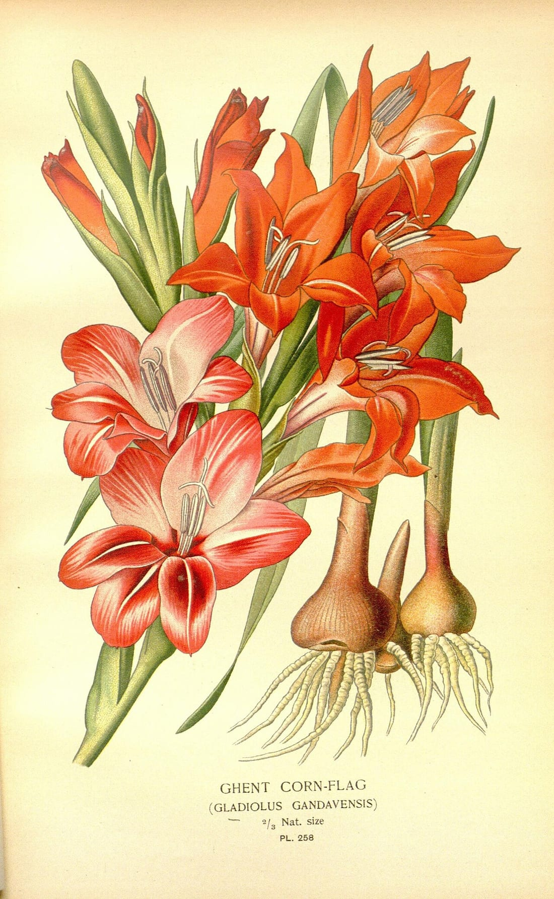

1선택 이유가 있는 추천
꽃 이름만 보여주지 않고 어떤 입력과 이야기 때문에 골랐는지 설명한다.
DearBloom은 관계·상황·취향·추억·안전 조건을 이해해, 검증된 꽃 데이터에서 성격이 다른 꽃 3안과 선택 이유를 추천합니다.
AI가 자유로운 문장을 추천 단서로 해석
검증된 꽃말·이야기·안전 데이터가 후보 판단

안심 선택
관계와 상황에 가장 무난한 꽃

의미 선택
꽃말과 이야기가 가장 잘 맞는 꽃

대담 선택
상대의 취향과 추억을 더 강하게 반영한 꽃
꽃 이름만 보여주지 않고 어떤 입력과 이야기 때문에 골랐는지 설명한다.
색상·문화권·시대에 따라 달라지는 의미를 출처와 함께 보여준다.
크게 위험한 꽃은 추천 전에 제외하고, 가벼운 주의가 필요한 꽃은 그 사실을 함께 보여준다.
카드 문구, 비밀 편지, 꽃 조합, 판매처·가까운 꽃집 탐색으로 이어진다.